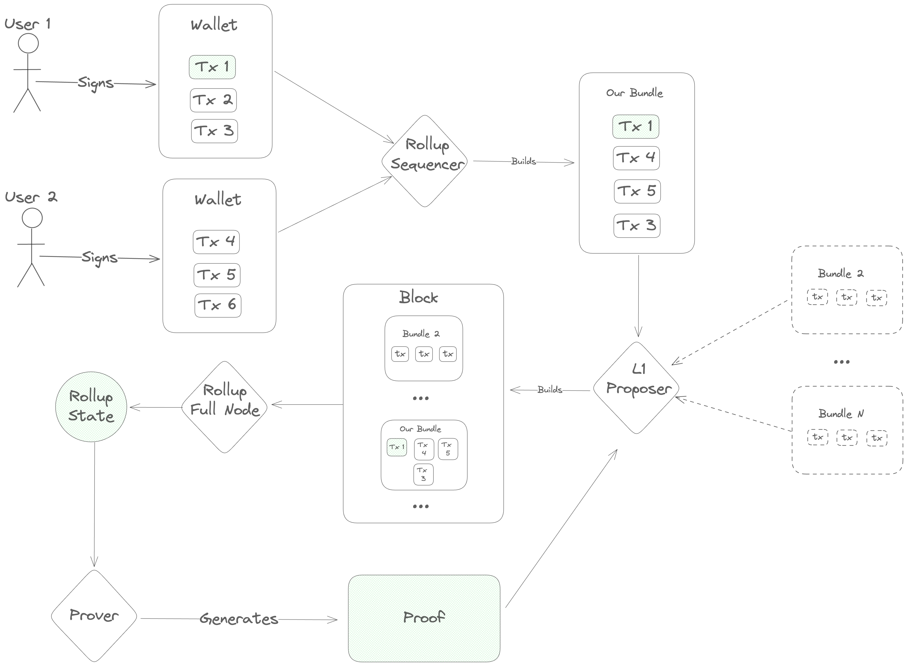
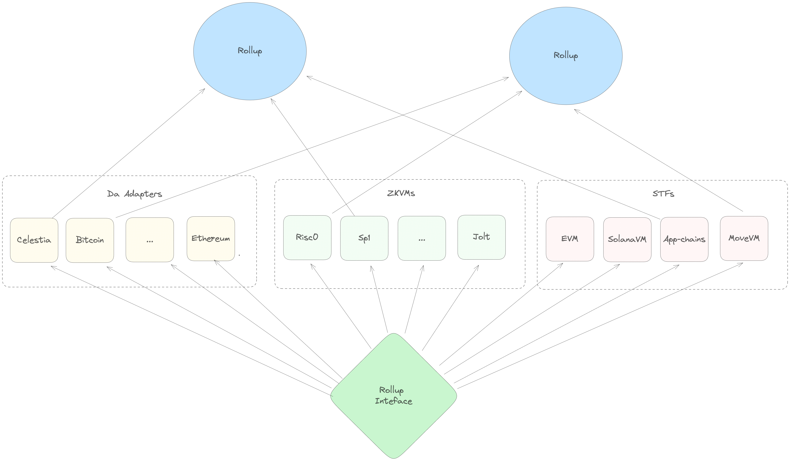

The Sovereign SDK Book
The Sovereign SDK is a modular framework for building rollups. It is designed to be flexible enough to support any application without sacrificing performance or ease-of-use.


Why Rollups?
As a developer, building your application as a rollup has several advantages:
- Dedicated throughput: your users won't pay more just because another app is generating a lot of transactions.
- Scalability: Sovereign SDK nodes scale seamlessly to thousands of transactions per second on commodity hardware, and can achieve substantially higher throughput on optimized hardware.
- Incentive alignment: the vast majority of the rollup fees can be distributed to users and developers of the rollup, rather than subsidizing token holders on L1.
- MEV mitigation: since you have full control over your rollup logic, you can design your protocol to minimize MEV and capture the portions that can't be eliminated.
- Flexibility: rollups enable you to express whatever logic you want, without worrying about the needs of other applications. Enable cutting edge EIPs and account abstraction, or ditch the EVM entirely and build an app-specific chain. With a rollup, you're in the driver's seat.
Why Sovereign?
The Sovereign SDK is the most flexible framework for building rollups. Unlike other rollup frameworks, the Sovereign SDK supports rollups without a settlement layer. That means that you can deploy your rollup anywhere - including on Bitcoin and Celestia. The SDK also provides top-tier scalability and a seamless user experience, all without sacrificing flexibility. Teams are already using the Sovereign SDK to build...
- An EVM chain on Bitcoin
- A MoveVM chain on Celestia
- Appchains on Solana
... and much more.
How it Works
Developers write the business logic of their rollup in Rust, and the SDK handles all of the complexity of creating a rollup on their behalf. Under the hood, the SDK compiles the chain's business logic to a zero-knowledge circuit, which it uses to prove correct execution (if the rollup is running in "zk mode") or to resolve disputes about execution (if the rollup is running in "optimistic mode"). It also generates a complete full node implementation which can reproduce the state of the blockchain and serve data to users.
Once the rollup is deployed, users post their transactions onto an underlying blockchain called a Data Availability Layer ("DA Layer") for ordering. After transactions are ordered, the full nodes of the rollup execute them to compute the new rollup state.
Finally, specialized actors called "provers" or "attesters" generate a proof that the new rollup state was computed correctly and post the proof back onto the DA layer. This enables clients of the rollup to verify claims about the rollup state without running a full node for themselves.
Getting Started
TODO. In the meantime, use the sov-rollup-starter repo
Rollup Devs
This section will provide an overview of the Sovereign SDK aimed at rollup
developers. It will describe the Runtime, Capabilities,
StateValue/Map/Vec, the Module trait, the Gas mechanisms, etc.
Gas overview and blessed values
Sovereign's SDK transactions should specify gas parameters in a similar way to
Ethereum. When submitting a transaction, you need to specify a handful of gas
parameters (that are stored in a structure called TxDetails) that depend on
the rollup settings but also on the type of call message to execute. We also
have to make sure that the sender holds enough gas tokens in its bank balance to
make sure that the transaction is not rejected due to insufficient funds.
Finally, sequencers need to stake enough tokens to pay for the transaction
pre-execution checks (like signature verification, deserialization, etc.).
This can be quite overwhelming at first glance, hence we provide here a quick summary of the gas parameters with their respective blessed values (this should be enough to execute most transactions that are not compute/storage intensive),
First, let's look at the gas parameters that are required to submit a
transaction (in the TxDetails structure):
#![allow(unused)] fn main() { use sov_modules_api::Spec; use sov_modules_api::transaction::PriorityFeeBips; /// Contains details related to fees and gas handling. pub struct TxDetails<S: Spec> { /// The maximum priority fee that can be paid for this transaction expressed as a basis point percentage of the gas consumed by the transaction. /// Ie if the transaction has consumed `100` gas tokens, and the priority fee is set to `100_000` (10%), the /// gas tip will be `10` tokens. pub max_priority_fee_bips: PriorityFeeBips, /// The maximum fee that can be paid for this transaction expressed as a the gas token amount pub max_fee: u64, /// The gas limit of the transaction. /// This is an optional field that can be used to provide a limit of the gas usage of the transaction /// across the different gas dimensions. If provided, this quantity will be used along /// with the current gas price (`gas_limit *_scalar gas_price`) to compute the transaction fee and compare it to the `max_fee`. /// If the scalar product of the gas limit and the gas price is greater than the `max_fee`, the transaction will be rejected. /// Then up to `gas_limit *_scalar gas_price` gas tokens can be spent on gas execution in the transaction execution - if the /// transaction spends more than that amount, it will run out of gas and be reverted. pub gas_limit: Option<S::Gas>, /// The ID of the target chain. pub chain_id: u64, } }
- The
max_feeparameter is the maximum amount of gas expressed in gas tokens that can be charged for the transaction execution. - The
max_priority_feeparameter is the maximum percentage (expressed in basis points) of the total gas consumed by the transaction execution that should be paid to reward the sequencer. This parameter can have any value because there is a safety mechanism that prevents the user from paying more than themax_feein total. - The
gas_limitparameter is the maximum amount of gas (expressed in multidimensional gas units) that can be consumed by the transaction execution. This parameter is optional and can be left unspecified. In the future, we will add support for automatically computing this parameter from transaction simulation. - The
user_balanceparameter is the balance of the sender's account (for the gas token) in the rollup's bank. - The
sequencer_balanceparameter is the balance of the sequencer's account (for the gas token) in the rollup's bank. - The
sequencer_stakeparameter is the staked amount of the sequencer in thesequencer_registrymodule.
Blessed gas parameters:
| Parameter | Value |
|---|---|
| max_fee | 100_000_000 |
| max_priority_fee | any (50_000 is a reasonable choice) |
| gas_limit | None |
| user_balance | 1_000_000_000 |
| sequencer_balance | 1_000_000_000 |
| sequencer_stake | 100_000_000 |
Note also that:
- The
base_fee_per_gasparameter (whose initial valueINITIAL_GAS_LIMITis set by the rollup in theconstants.toml) roughtly corresponds to the rollup's gas price and is an internal parameter of the rollup. - A batch can consume up to
INITIAL_GAS_LIMITgas units of gas, and the gas target is1/ELASTICITY_MULTIPLIERtimes that value (for each dimension). - The
base_fee_per_gasis dynamically adjusted based on the gas consumption of the batch. The adjustment follows the EIP-1559 which makes it goes down if the batch consumes more gas than the target (and respectively up if the batch consumes less gas than the target).
The gas specification provides a detailed description of the gas mechanisms used within the SDK.
DA Layer
Sequencer Registration via Forced Inclusion
Forced inclusion is a strategic mechanism in rollups designed to circumvent sequencers that censor user transactions. It allows users to directly submit transaction batches to the Data Availability Layer instead of going through a sequencer.
The Sovereign SDK supports this feature under specific conditions and guidelines. Crucially, only "Register Sequencer" transactions are accepted for forced inclusion; all other types will be ignored. For more details, see the Rules section.
Usage
The Sovereign SDK limits the number of batches from unregistered sequencers processed per rollup slot. This measure limits the use of this mechanism as a denial-of-service (DOS) attack vector.
Process for Forced Registration
- Create a batch containing a valid "Register Sequencer" transaction.
- Submit the batch to the Data Availability layer.
- Rollup nodes collect and execute the transaction.
- If the transaction complies with all rules, the user is registered as a sequencer and can submit regular transaction batches.
Rules
To ensure forced inclusion requests are processed correctly, the following rules apply:
- Transaction Limit: Only the first transaction in each batch is taken into account. Any additional transactions will be discarded.
- Transaction Type: The transaction must be a "Register Sequencer" transaction.
- Transaction Construction: The transaction must be properly formatted and comply with standard transaction rules.
- Financial Requirements: Users must have enough funds to cover:
- Pre-execution checks (including signature validation, deserialization and transaction type checks).
- Transaction execution costs.
- A bond required for sequencer registration.
SDK Contributors
This section provides an overview of the Sovereign SDK aimed at core contributors to the framework. It describes the primary components of the SDK at the level of Rust crates.
Transaction Lifecyle Overview
The transaction lifecycle begins with a user. First, the user opens a frontend and gets some information about the current state of the blockchain. Then, they open their wallet and sign a message indicating what action they want to take.
Once a message is signed, it needs to be ordered before full nodes can execute it, so the user's next step is to contact a sequencer to post the transaction onto the DA layer.
The sequencer accepts a number of transactions and bundles them into a single
Blob, which he sends to the DA layer for inclusion. This Blob is
ultimately sent to a Proposer on the DA layer, who includes it in his block
and gets it approved by the DA layer's validator set. Once consensus is reached
on the DA layer block containing the sequencer's Blob, the full nodes of the
rollup parse its contents and execute the transactions, computing a new rollup
state.
Next, specialized actors ("provers" or "attesters") generate a proof of the new
rollup state and post it onto the DA layer. Finally, light clients of the
rollup (end-users and/or bridges on other blockchains) verify the proof and see
the results of the transaction.

SDK Design Philosophy
Now that we've established the basic transaction lifecycle, we have the background we need to really dig into the design of the Sovereign SDK.
At a high level, the design process for the SDK was essentially just tracing the transaction lifecycle diagram and asking two questions at each step:
- "How do we implement this step so that we really 'inherit the security of the L1'?"
- "Within those constraints, how do we build the SDK to accommodate the broadest range of use cases?"
Step 1: Retrieving Information
Before doing anything, users need to find out about the current state of the rollup. How can we enable that?
At this step, we have several conflicting goals and constraints:
- We want the user's view of the rollup to be as up-to-date as possible
- We want to provide the strongest possible guarantees that the user's view of state is correct
- We want to minimize costs for the rollup
- Users may not be willing/able to download more than a few hundred kilobytes of data or do any significant computation
Obviously, it's not possible to optimize all of these constraints simultaneously. So, in the Sovereign SDK, we allow developers some flexibility to pick the appropriate tradeoffs for their rollups - and we give end-users additional flexibility to choose the setup that works best for them.
In practice, that means that...
- Developers can choose between Optimistic and ZK rollups, trading transaction cost for time-to-finality.
- Users can choose between running a full node (instant state access, but expensive), running a light client (slower state access, but much cheaper and trustless) and trusting a full node (instant state access)
Step 2: Signing Transactions
The crypto community has fifteen years of experience building wallets for L1 blockchains. That means that existing wallets are much better than anything we could build in a couple of weeks. But at the same time, the user experience is... not great. Users lose all of their funds pretty regularly, and they still have to deal with complexity like storing seed phrases and inspecting transaction hashes.
So, we've made the pragmatic choice to be as compatible as possible with existing crypto wallets, while leaving the door open for future improvements.
In rollups built with sov-modules, this is enabled by the
RuntimeAuthenticator abstraction built into the
stf-blueprint. Using
this trait, we allow rollup developers to bring their own transaction
deserialization and authorization logic. Even better, we allow rollups to
support several different Authenticator implementations simultaneously. This
allows developers to retain backward compatibility with existing wallets,
without giving up the freedom to create specialized transaction formats that
integrate more deeply with the rollup's logic and the wallet interface.
Step 3: Sequencing
Once a user has signed a transaction, we need to broadcast it to all full nodes of the rollup.
Since a primary design goal is to inherit the security of the underlying blockchain, we want to ensure that users are always able to fall back on the censorship resistance of the L1 if necessary. At the same time, we don't expect users to interact directly with the underlying blockchain in the normal case. The underlying blockchain will charge fees in its own token, and we don't need or want users of the rollup to be thinking about exchange rates and L1 gas limits.
We also need to protect the rollup from spam. In a standard blockchain, spam is handled by ensuring that everyone pays for the computation that the network does on their behalf. Transactions with invalid signatures are filtered out at the peer-to-peer layer and never get included in blocks. This means that an attacker wanting to spam the rollup has no asymmetric advantage. He can send invalid transactions to the few nodes he happens to be directly connected to, but they will just disconnect. The only way to get the entire blockchain network to process a transaction is to provide a valid signature and pay enough gas fees to cover the cost of execution.
In a rollup, things are different. Rollups inherit the consensus of an underlying blockchain which doesn't know about the transaction validity rules of the rollup. Since the underlying chain doesn't know the rules, it can't enforce them. So, we need to be prepared to deal with the fact that the rollup's ledger is dirty. This is bad news, because checking transaction signatures is expensive - especially in zero-knowledge. If we aren't careful, an attacker could flood the rollup's ledger with malformed transactions and force the entire network to pay to check thousands of invalid signatures.
This is where the sequencer comes in. Sequencers accept transactions from users
and bundle them into Blobs, which get posted onto the L1. At the rollup level,
we force all sequencers to register by locking up some tokens - and we ignore
any transactions which aren't posted by a registered sequencer. If a sequencer's
bundle includes any transactions which have invalid signatures, we slash his
deposit and remove him from the registry. This solves two problems at once.
Users don't need to worry about obtaining tokens to pay for inclusion on the
DA layer, and the rollup gets builtin spam protection.
Unfortunately, this setup also gives sequencers a lot of power. Since the sequencer handles transactions before they've gone through the DA layer's consensus mechanism, he can re-order transactions - and potentially even halt the rollup by refusing to publish new transactions.
To mitigate this power, we need to make a couple of adjustments to the protocol.
First, we allow anyone to register as a sequencer depositing tokens into the sequencer registry. This is a significant departure from most existing rollups, which rely on a single trusted sequencer.
Second, we allow sequencers to register without sending a transaction through
an existing sequencer. Specifically, we add a rule that the rollup will
consider up to K extra blobs from unregisterd sequencers in each rollup block.
If any of the first K "unregistered" blobs conform to a special format, then
the rollup will interpret them as requests to register a new sequencer. By
capping the number of unregistered blobs that we look at, we limit the
usefulness of unregistered blobs as a DOS vector while still ensuring that
honest sequencers can register relatively quickly in case of censorship.
Finally, we try to make sequencing competitive by distributing some of the fees from each transaction to the sequencer who included it. This incentivizes new sequencers to register if the quality of service is low.
Ok, that was a lot of information. Let's recap.
In the Sovereign SDK, sequencers are middlemen who post transactions onto the DA layer, but it's the DA layer which ultimately decides on the ordering of transactions. Anyone can register as a sequencer, but sequencers expose themselves to slashing if they include transactions with invalid signatures (or certain other kinds of obvious spam).
That covers a huge chunk of sequencing. But there are still two topics we haven't touched on: stateful validation, and soft confirmations.
Stateful Validation
Up to this point, we've been talking about transactions as if they're always either valid or invalid for all time, regardless of what's happening on the rollup. But in the real world (especially when there are many sequencers), that's not the case. To give just one example, it's entirely possible for an account to burn through all of its funds with a single transaction, leaving nothing to pay gas with the next time around. So, if two sequencers publish blobs at about the same time, it's very possible that the first blob will cause some tranasactions in the second one to become invalid.
This complicates our analysis. Previously, we assumed that a sequencer was malicious if he caused any invalid transactions to be processed. That meant that we could safely slash his deposit and move on whenever we encountered a validation error. But now, we can't make that assumption. Otherwise, sequencers would have to be extremely conservative about which transactions they included - since a malicious (or confused) user could potentially cause a sequencer to get slashed by sending conflicting transactions to two different sequencers at the same time.
On the other hand, we don't want to let sequencers get away with including transactions that they know are invalid. Otherwise, a malicious sequencer could include invalid transactions "for free", causing the rollup to do a bunch of wasted computation.
We address these issues by splitting transasction validation into two categories. Stateless validation (i.e. signature checks) happens first, and transactions which fail stateless validation are invalid forever. If a sequencer includes a transaction which is statelessly invalid, then we know he's malicious. After a transaction has passed stateless validation, we proceed to make some stateful checks (i.e. checking that the transaction isn't a duplicate, and that the account has enough funds to pay for gas). If these checks fail, we charge the sequencer a small fee - just enough to cover the cost of the signature check.
This ensures that sequencers are incentivized to do their best to filter out invalid transactions, and that the rollup never does any computation without getting paid for it without being unfairly punitive.
Soft Confirmations
Now that we've talked about the minimum requirements for sequencer, we move on to soft-confirmations.
One of the biggest selling points of rollups today is the ability to tell users the outcome of the tranaction instantly. Under the hood, this experience is enabled by giving a single trusted sequencer a "lock" on the rollup state. Because he holds the lock, the sequencer can run a local simulation to determine the exact effect of a transaction before he posts it on the DA layer.
Unfortunately, this introduces a load bearing point of centralization. If the centralized sequencer becomes unavailable (or is malicious), the rollup halts and users have little recourse.
On existing rollups, this issue is somewhat mitigated by providing an "inbox" on the DA layer where users can send special "forced withdrawal" transactions. However, in most existing rollups these "forced" transactions are significantly less powerful than ordinary ones. (Users are often limited to only withdrawing funds) and the delay period before they are processed is long.
In the Sovereign SDK, we try to do better. Unfortunately, there's no way to enable soft confirmations without giving some entity a lock on (some subset of) the rollup state. So, this is exactly what we do. We allow rollup deployers to specify some special "preferred sequencer", which has a partial lock on the rollup state.
In order to protect users in case of a malicious sequencer, though, we make a few additional changes to the rollup.
First, we separate the rollup state into two subsets, "user" space and "kernel" space. The kernel state of the rollup is maintained programatically, and it depends directly on the headers of the latest DA layer blocks. Inside of the protected kernel state, the rollup maintains a list of all the blobs that have appeared on the DA layer, and the block number in which they appeared.
Second, we prevent access to the kernel state of the rollup during transaction execution. This prevents users from creating transactions that could accidentally invalidate soft-confirmations given by the sequencer, as well as preventing the sequencer from deleting forced transactions before they can be processsed.
Finally, we add two new invariants:
-
Every blob which appears on the (canonical) DA chain will be processed within some fixed number of blocks
-
All "forced" (non-preferred) transactions will be processed in the order they appeared on the DA layer
To help enforce these invariants, we add a concept of a "virtual" slot number. The virtual slot number is a nondecreasing integer which represents block number that the preferred sequencer observed when he started building his current bundle. Any "forced" blobs which appear on the DA layer are processed when the virtual slot number advances beyond the number of the real slot in which they appeared.
Inside the rollup, we enforce that...
-
The virtual slot number never lags behind the real slot number by more than some constant
Kslots- This ensures that "forced" transactions are always processed in a reasonable time frame
-
The virtual slot number increments by at least one every time the preferred sequencer succesfully submits a blob. The sequencer may increment the virtual slot by more than one.
-
The virtual slot number is never greater than the current (real) slot number
-
Transactions may only access information about the DA layer that was known at the time of their virtual slot's creation. Otherwise, users could write transactions whose outcome couldn't be predicted, making it impossible to give out soft confirmations. - For example, a user could say
if current_block_hash % 2 == 1 { do_something() }, which has a different outcome depending on exactly which block it gets included in. Since the rollup sequencer is not the L1 block proposer, he doesn't know what block the transaction will get included in! By limiting transactions to accessing historical information, we avoid this issue.
What all of this means in practice is that...
- The visible state never changes unless either the preferred sequencer submits a bundle, or a timeout occurs (i.e. the virtual slot lags too far). This ensures that the preferred sequencer always knows the exact state that he's building on top of.
- An honest sequencer wants to keep the virtual slot number as close to the real slot number as possible. This way, he has more buffer to absorb downtime without the state changing. This reduces the risk of soft-confirmations being invalidated.
- Honest sequencers can always give accurate soft confirmations, unless the DA
layer experiences a liveness failure lasting more than
Kslots. - Transactions can access information about the underlying blockchain with the best latency that doesn't invalidate soft confirmations.
Handling Preferred Sequencer Failure
With the current design, the Sovereign SDK supports soft confirmations while providing a reasonably powerful forced transaction mechanism. We also provide some limited protection from a malicious sequencer. If the sequencer is malicious, he can - at worst - delay transaction processing by some constant number of blocks. He can't prevent forced transactions from being processed, and he can't selectively delay transactions.
We also provide some limited protection if the preferred sequencer commits a slashable offense. In this case, the rollup enters "recovery mode", where it reverts to standard "based" sequencing (where all sequencer are equal). In this mode, it advances the virtual slot number two-at-a-time until the rollup is caught up, at which point the rollup behaves as if there had never been a preferred sequencer.
In the future, we may also add slashing if the preferred sequencer gives "soft-confirmations" which turn out to be invalid, but this requires some additional design work.
Step 4: Execution
Once a transaction is sequenced, the rollup needs to process it.
At a high level, a Sovereign SDK transaction goes through the following sequence:
-
(Stateless) Deserialization: Decoding the bytes of the transaction into meaningful components (signature, ChainID, etc)
-
(Stateful) Pre-validation: Checking that the address which is claiming to have authorized the transaction exists and retrieving its preferences for authorization. For example, if the address is a multisig, fetch the set of public keys and the minimum number of signatures.
-
(Stateless) Authentication: Checking that the transaction is authorized. For example, checking that the signatures are valid.
-
(Stateful) Authorization: Matching the results of the authentication and pre-validation steps to decide whether to execute. This step also reserves the funds to pay for gas used during transaction execution. --- State changes up to this point are irreversable. State changes beyond this point are either committed or reverted together
-
(Stateful) Pre-dispatch hook: This hook allows all modules to inspect the transaction (and their own state) and do initialization before the transaction is executed. For example, a wallet module might use this hook to check the user's balance and store it for later retrieval. This hook may abort the transaction and revert any state changes by returning an
Error. -
(Stateful) Execution: The transaction is dispatched to a single target module for execution. That module may invoke other modules if necessary during execution. If this call returns an error, all state changes from step 5 onward are reverted.
-
(Stateful) Post-dispatch hook: This hook allows all modules to inspect their state and revert the transaction if necessary. If this call returns an error, all state changes from step 5 onward are reverted.
-
(Stateful) Post-execution: After transaction execution, any unused gas is refunded to the payer
As described in the "Sequencing" documentation, sequencers are slashed if any of the two stateless steps fail. If either of the stateful steps prior to execution fail, the sequencer is penalized - but just enough to cover the cost of the work that has been done. If the transaction fails during execution, the costs are paid by the user (or whichever entity is sponsoring the gas cost of the transaction.)
For more details on execution, see [TODO]
Step 5: Proving
Once a transaction is executed, all of the rollup full nodes know the result instantly. Light clients, on the other hand need proof. In this section, we'll describe the different kinds of proof that the Sovereign SDK offers.
Zero-Knowledge Proofs
The most powerful configuration for a rollup is zero-knowledge mode. In this mode, light clients can trustlessly sync the chain with near-zero overhead and only minutes of lag behind the chain tip. This enables fast and trustless bridging between rollups, and between the rollup and the execution environment of its DA layer (if applicable).
In the Sovereign SDK, proving is asynchronous (meaning that we post raw transactions on the DA layer - so that full nodes can compute the rollup state even before a proof is generated). This means that light clients have a view of the state that lags a little bit behind full nodes.
Proof Statements
All zero-knowledge proofs have the form, "I know of an input such that...". In our case, the full statement is:
I know of a DA layer block with hash X (where X is a public input to the proof) and a rollup state root Y (where Y is another public input) such that the rollup transitions to state Z (another public input) when you apply its transaction processing rules.
To check this proof, a client of the rollup needs to check that the input block hash X corresponds to the next DA layer block, and that the input state root Y corresponds to the current rollup state. If so, the client can advance its view of the state from Y to Z.
This works great for a single block. But if a client needs to validate the entire history of the rollup, checking proofs of each block would get expensive. To alleviate this problem, we use recursive proofs to compress multiple block proofs into one. (A nice property of zero-knowledge proofs is that the work to verify a proof is roughly constant - so checking this recursive "aggregate" proof is no more expensive than checking the proof of a single block.)
Each AggregateProof is a statement of the form:
I know of a (previous) valid
AggregateProofstarting fromA(the genesis block hash, a public input) with state rootB(the rollup's genesis state, a public input) and ending at block hashCwith state rootD. And, I know of a sequence of valid proofs such that...
- For each proof, the block header has the property that
header.prev_hashis the hash of the previous header- For each proof, the input state root is the output root of the previous root.
- The block header from the first proof has
prev_hash == C- The first proof has has input state root
D- The final proof in the chain has block hash
Aand output rootB(whereAandBare public inputs)
Incentives
Generating zero-knowledge proofs is expensive. So, if we want proofs to be generated, we need to incentivize proof creation in protocol, preferrably using the gas fees that users are already paying.
In a standard blockchain, the goal of transaction fees markets is to maximize consumer surplus. They achieve this by allocating a scarce resource (blockspace) to the people who value it most. Analysis shows that EIP-1559 is extremely good at solving this optimization problem in the setting where supply is fixed and demand varies rapidly. EIP-1559 adjusts the price of blockspace to the exact price level at which demand matches supply.
In zk-rollups, we have a slightly different setup. Our supply of blockspace is not constant. Instead, it's possible to invest more money in proving hardware in order to increase the rollup's throughput. However, bringing more prover capacity online takes time. Deals have to be negotiated, hardware provisioned, etc. So, in the short term, we model prover capacity as being fixed - and we use EIP-1559 to adjust demand to fit that target.
In the long run, we want to adjust the gas limit to reflect the actual capacity of available provers. To facilitate this, we track the rollup's gas usage and proving throughput (measured in gas per second) over time. If rollup blocks are full and provers are able to keep up, we gradually increase the gas limit until blocks are no longer full or provers start to fall behind.
This still leaves one problem... how do we incentivize provers to bring more hardware online? After all, adding more hardware increases the gas limit, which increases the supply of blockspace. This causes congestion (and fees) to fall, increasing consumer surplus. But provers don't get paid in consumer surplus, they get paid in fees. So, adding more hardware hurts provers in two ways. It increases their costs, and it reduces the average fee level. This means that provers are incentivized to provide as little capacity as possible.
The way we handle this problem is by introducing competition. In Sovereign, we only reward the first prover to publish a valid proof of a block. Since proving is almost perfectly parallel, and provers are racing to prove the block first, a prover which adds slightly more capacity than its rivals experiences a disproportionate increase in rewards. This should encourage provers to bring as much capacity as possible.
Since we want to reward provers with funds on the rollup, we need consensus.
(Otherwise, it would be trivial to cause a chain split by creating a fork which
sent some rewards to a different prover.) So, we require provers to post their
proofs on chain. The first prover to post a valid proof of a particular block
gets rewarded with the majority of the base_fees collected from that block.
This is a deviation from EIP-1559, where all base fees are burned. Intuitively,
our construction is still safe because provers "burn" money in electricity and
hardware costs in order to create proofs. However, we also burn a small
proportion of base fees as insurance in case proving costs ever fall to
negligble levels.
Once a prover has posted his proof on the DA layer, two things happen. First, full nodes read the proof and, if it's valid reward the prover. If it's invalid, the prover has his deposit slashed. (Just like a misbehaving sequencer. Also like sequencers, data posted by un-bonded entities is ignored.) Second, light clients of the rollup download and verify the proof, learning the state of the rollup. As an implementation detail, we require proofs which get posted on chain to be domain separated, so that light clients can download just the proofs from a rollup without also needing to fetch all of the transaction data.
Summary: The proving workflow
So, putting this all together, the proving workflow looks like this:
-
A DA layer block is produced at height
N. This block contains some rollup transactions. -
Full nodes immediately process the transactions and compute a new state.
-
Provers begin generating a proof of block
N. -
(About 15 minutes later) a prover creates a valid proof of block
N. In the meantime, DA layer blocksN+1throughN+Xhave been produced.a. At this point, full nodes are aware of rollup state
N+X, while light clients are still unaware ofN -
The prover creates a new
AggregateProof, which...a. Proves the validity of the proof of block
Nb. Proves the validity of the previous
AggregateProof(which covered the rollup's history from genesis to blockN-1)c. Optionally proves the validity of proofs of blocks
N+1,N+2, ...,N+X, if such proofs are available. (Note that theAggregateProofmust cover a contiguous range of blocks starting from genesis, but it may cover any number of blocks subject to that constraint.) For concreteness, suppose that in this case the prover includes blocksN+1throughN+5. -
The prover posts the new
AggregateProofonto the DA layer at some height - call itN+30. At this point, full nodes are aware of stateN+30(which includes a reward for the prover), and light clients are aware of stateN+5. At some point in the future, a proof ofN+30will be generated, at which point light clients will become aware of the prover's reward.
Optimistic Proofs
For some rollups, generating a full zero-knowledge proof is too expensive. For these applications, the Sovereign SDK offers Optimistic Mode, which allows developers to trade some light-client latency for lower costs. With a zk-rollup, light clients have a view of the state which lags behind by about 15 minutes (the time it takes to generate a) zero- knowledge proof. However, at the end of those 15 minutes, light clients know the state with cryptographic certainty.
In an optimistic rollup, light clients have a different experience. They get some indication of the new rollup state very quickly (usually in the very next block), but they need to wait much longer (usually about a day) to be sure that their new view is correct. And, even in this case, clients only have "cryptoeconomic" certainty about the new state.
Proving Setup
In an optimistic rollup, the "proofs" checked by light clients are not (usually)
proofs at all. Instead, they are simple attestations. Attesters stake tokens on
claims like "the state of the rollup at height N is X", and anyone who
successfully challenges a claim gets to keep half of the staked tokens. (The
other half are burned to prevent an attester from lying about the state and then
challenging himself from another account and keeping his tokens). In exchange,
for their role in the process, attesters are rewarded with some portion of the
rollup's gas fees. This compensates attesters for the opportunity cost of
locking their capital.
This mechanism explains why light clients can know the state quickly with some confidence right away, but they take time to reach full certainty. Once they've seen an attestation to a state, clients know that either the state is correct, or the attester is going to lose some amount of capital. As time goes by and no one challenges the assertion, their confidence grows until it reaches (near) certainty. (The point at which clients are certain about the outcome is usually called the "finality period" or "finality delay".)
The previous generation of optimistic rollups (including Optimism and Arbitrum)
relies on running an on-chain bisection game over an execution trace to resolve
disputes about the rollup state. This requires $log_2(n)$ rounds of interaction,
where n is the length of the trace (i.e. a few hundred million). To handle the
possibility of congestion or censorship, rollups need to set the timeout period
of messages conservatively - which means that a dispute could take up to a week
to resolve.
In the Sovereign SDK, we resolve disputes by generating a zero-knowledge proof of the outcome of the disputed block. Since this only requires one round of interaction, we don't need the same challenge delay. However, we do need to account for the fact that proving is a heavy process. Generating a proof might take a few hours, and proving services might be experiencing congestion. To minimize the risk, we plan to set the finality period conservatively at first (about one day) and reduce it over time as we gain confidence.
Otherwise, the overall proving setup is quite similar to that of a zk-rollup. Just as in zk-rollups, proofs (and attestations) are posted onto the DA layer so that we have consensus about who to reward and who to slash. And, just like a zk-rollup, optimistic proofs/attestations are posted into a separate "namespace" on the DA layer (if possible) so that light clients can avoid downloading transaction data. The only other significant distinction between optimistic and zk rollups in Sovereign is that optimistic rollups use block-level proofs to resolve disputes instead of generating aggregate proofs which go all the way to genesis.
Conclusion
In the Sovereign SDK, we try to provide security, flexibility, and performance in that order.
As a contributor, it's your job to maintain that hierarchy. Security must always come first. And in blockchain, security is mostly about incentives. Especially in blockchain, you get what you incentivize. If your rollup under-prices some valuable resource, you'll get spam. If you under pay for some service, that service won't be provided reliably.
This is why incentive management is so deeply baked into the SDK. Every step - from sequencing to proving to execution to finality - needs to be carefully orchestrated to keep the incentives of the participants in balance.
Once the setup is secure, our next priority is enabling the broadest set of use cases. We try to provide maximum flexibility, and abstract as much functionality as possible into reusable components. You can read more about how we achieve flexibility at the level of Rust code in the abstractions chapter.
Finally, we optimize performance. This means eliminating redundant computation, carefully managing state access patterns, and considering the strengths and weaknesses of zero-knowledge proofs systems.
Happy hacking!
Main Abstractions
This document provides an overview of the major abstractions offered by the SDK.
- Rollup Interface (STF + DA service + DA verifier)
- sov-modules (
Runtime,Module, stf-blueprint w/ account abstraction, state abstractions)- sov-sequencer
- sov-db
- Rockbound
One of the most important principles in the Sovereign SDK is modularity. We believe strongly in separating rollups into their component parts and communicating through abstract interfaces. This allows us to iterate more quickly (since components are unaware of the implementation details of other components), and it also allows us to reuse components in contexts which are often quite different from the ones in which they were orginally designed.
In this chapter, we'll give a brief overview of the core abstractions of the Sovereign SDK
Native vs. ZK Execution
Perhaps the most fundamental abstraction in Sovereign is the separation between "native" code execution
(which computes a new rollup state) and zero-knowledge verification of that state. Native execution is
the experience you're used to. In native execution, you have full access to networking, disk, etc. In
native mode, you typically trust data that you read from your own database, but not data that comes over
the network.
Zero-knowledge execution looks similar. You write normal-looking Rust code to do CPU and memory
operations - but under the hood, the environment is alien. In zero-knowledge execution, disk
and network operations are impossible. Instead, all input is received from the (untrusted)
machine generating the proof via a special syscall. So if you make a call that looks like a network access,
you might not get a response from google.com. Instead, the prover will pick some arbitrary bytes to
give back to you. The bytes might correspond to an actual response (i.e. if the prover is honest
and made the network request for you) - but they might also be specially crafted to deceive you.
So, in zero-knowledge mode, great care must be taken to avoid relying on unverified data from the
prover.
In the Sovereign SDK, we try to share code between the "native" full node implementation and the
zero-knowledge environment to the greatest extent possible. This minimizes surface area for bugs.
However, a full node necessarily needs a lot of logic which is unnecessary (and undesirable) to
execute in zero-knowledge. In the SDK, such code is gated behind a cargo feature called "native".
This code includes RPC implementations, as well as logic to pre-process some data into formats which
are easier for the zero-knowledge code to verify.
The Rollup Interface
If you squint hard enough, a zk-rollup is made of three separate components. There's an underlying blockchain ("Data Availability layer"), a set of transaction execution rules ("a State Transition Function") and a zero-knowledge proof system (a "ZKVM" for zero-knowledge virtual machine). In the abstract, it seems like it should be possible to take the same transaction processing logic (i.e. the EVM) and deploy it on top of many different DA layers. Similarly, you should be able to take the same execution logic and compile it down to several different proof systems - in the same way that you can take the same code an run it on Risc0 or SP1.
Unfortunately, separating these components can be tricky in practice. For example, the OP Stack relies on an Ethereum smart contract to enforce its censorship resistance guarantees - so, you can't easily take an OP stack rollup and deploy it on a non-EVM chain.
In the Sovereign SDK, flexibility is a primary design goal. So we take care to codify this separation of concerns
into the framework from the very beginning. With Sovereign, it's possible to run any State Transition Function
alongside any Da Service on top of any (rust-compatible) proof system and get a functional rollup.
The rollup-interface crate is what makes this possible. Every other crate in the SDK depends on it,
because it defines the core abstractions that are shared between all SDK rollups.

Inside of the rollup interface, the native vs zero-knowledge distinction appears in numerous places. For example,
the DA layer abstraction has two components - a DaService, which runs as part of native full node execution and
provides methods for fetching data from the underlying blockchain; and DaVerifier, which runs in zero-knowledge
and verifies that the data being executed matches the provided DA block header.
How it Works
Essentially, the Sovereign SDK is just a generic function that does this:
#![allow(unused)] fn main() { fn run_rollup<Da: DaService, Zk: Zkvm, Stf: StateTransitionFunction>(self, da: Da, zkvm: Zk, business_logic: Stf) { loop { // Run some `native` code to get the data for execution let (block_data, block_header) = da.get_next_block(); let (input_state, input_state_root) = self.db.get_state(); // Run some zero-knowledge code to execute the block let proof = zkvm.prove(|| { // Check that the inputs match the provided commitments if !da.verify(block_data, block_header) || !input_state.verify(input_state_root) { panic!() }; // Make the data commitments part of the public proof output!(block_header.hash(), input_state_root) let output_state_root = business_logic.run(block_data, input_state); // Add the output root to the public proof output!(output_state_root) }); // Publish the proof onto the DA layer da.publish(proof); } } }
As you can see, most of the heavy lifting is done by the DA layer, the Zkvm and the rollup's business logic.
The full node implementation is basically just glue holding these components together.
DA
As discussed above, the role of the DA layer is to order and publish data. To integrate with the Sovereign SDK,
a DA layer needs to provide implementations of two core traits: DaService and DaVerifier.
DA Service
The DaService trait is usually just a thin wrapper around a DA layer's standard RPC client. This trait
provides standardized methods for fetching data, generating merkle proofs, and publishing data. Because
it interacts with the network, correct execution of this trait is not provable in zero-knowledge.
Instead, the work of verifying of the data provided by the DaService is offloaded to the DaVerifier trait.
Since the DaService runs only in native code, its implementation is less concerned about efficiency than
zero-knowledge code. It's also easier to patch, since updating the DaService does not require any light
clients or bridges to update.
The DaService is the only component of the SDK responsible for publishing and fetching data. The SDK's node
does not currently have a peer-to-peer network of its own. This dramatically simplifies the full node and reduces
bandwidth requirements.
DA Verifier
The DaVerifier is the zero-knowledge-provable counterpart of the DaService. It is responsible for checking
that the (untrusted) private inputs to a proof match the public commitment as efficiently as possible. It's common
for the DaVerifier to offload some work to the DaService (i.e. as computing extra metadata) in order to reduce
the amount of computation required by the DaVerifier.
At the level of Rust code, we encode the relationship between the DaVerifier and the DaService using a helper
trait called DaSpec - which specifies the types on which both interfaces operate.
Zero Knowledge Virtual Machine ("Zkvm")
The Zkvm traits make a zk-snark system (like Risc0 or Sp1) compatible with the Sovereign SDK. Like the DA layer, we
separate Zkvm traits into a native and zk version, plus a shared helper.
The ZkvmHost trait describes how a native computer executes an elf file (generated from Rust code) and generates
a zero-knowledge proof. It also describes how the native machine passes private inputs (the "witness") into the execution.
The ZkvmGuest trait describes how a program running in zero-knowledge mode accepts inputs from the host machine.
Finally, the Zkvm trait describes how a proof generated by the host is verified. This trait is implemented by both the
Host and the Guest, which is how we represent that proofs must be verifiable natively and recursively (i.e. inside
another SNARK.)
State Transition
A StateTransitionFunction ("STF") is a trait which describes:
-
How to initialize a rollup's state at genesis
-
How to apply the data from the DA layer to generate a new state
In other words, the implementation of StateTransitionFunction is what defines the rollup's "business logic".
In the Sovereign SDK, we define a generic full node which can run any STF. As long as your logic implements the interface, we should be able to run it.
However, implementing the business logic of a rollup is extremely complicated. While it's relatively easy to
roll your own implementation of the Da or Zkvm traits, building a secure STF from scratch is a massive undertaking.
It's so complex, in fact, that we assume no one will ever do it - andthe vast majority of the Sovereign SDK's code is
devoted to providing a generic implementation of an STF that developers can customize. (This STF is what we call the
Sovereign module system, or sov-modules).
So if no one is ever going to implement the StateTransitionFunction interface, why bother maintaining it at all?
One reason is for flexibility. Just because we don't expect anyone to roll their own STF doesn't mean that they won't.
But a bigger motivation is to keep concerns separate. By hiding the implementation details of the rollup behind the
STF interface, we build a firm abstraction barrier between it and the full node. This means that we're free to make
breaking changes on either side of the wall (either in the node, or in the STF) without worrying about breaking the
other component.
Sov Modules
Outside of the rollup interface, the most important abstraction is sov-modules. sov-modules is a pre-built STF
with pluggable... modules. It does the heavy lifting of implementing a secure STF so that you can focus on the core
logic of your application.
The Runtime
At the heart of any sov-modules rollup is the Runtime:
#![allow(unused)] fn main() { // An example runtime similar to the one used in our "standard" demo rollup pub struct Runtime<S: Spec, Da: DaSpec> { /// The Bank module implements fungible tokens, which are needed to charge `gas` pub bank: sov_bank::Bank<S>, /// The Sequencer Registry module is where we track which addresses can send batches to the rollup pub sequencer_registry: sov_sequencer_registry::SequencerRegistry<S, Da>, /// The Prover Incentives module is where we reward provers who do useful work pub prover_incentives: sov_prover_incentives::ProverIncentives<S, Da>, /// The Accounts module implements identities on the rollup. All of the other modules rely on it /// to link cryptographic keys to logical accounts pub accounts: sov_accounts::Accounts<S>, /// The NFT module provides an implementation of a non-fungible token standard. It's totally optional. pub nft: sov_nft_module::NonFungibleToken<S>, #[cfg_attr(feature = "native", cli_skip)] /// The EVM module lets the rollup run Ethereum smart contracts. It's totally optional. pub evm: sov_evm::Evm<S, Da>, } }
At the highest level, a runtime is "just" a collection of all the modules which are included in your rollup.
Its job is to take Transactions and dispatch them to the appropriate module for execution.
Pretty much all rollups built with the sov-modules include the bank, the sequencer registry, and the accounts
module in their Runtime. They also usually include one of sov_prover_incentives
(if they're a zk-rollup) or sov_attester_incentives (if they're an Optimistic rollup).
You may also have noticed that the Runtime is generic over two types - a Spec and a DaSpec. These two types
describe the core types (addresses, hashers, cryptography) used by the rollup and the DA layer respectively.
Making your runtime generic over a Spec means that you can easily change DA layers, or swap any of the core
primitives of your rollup. For example, a rollup can trivially switch from Ed25519 to secp256k1 for its
signature scheme by changing the implementation of its Spec trait.
Modules
"Modules" are the things that process transactions. For example, the Bank module lets users transfer tokens
to each other. And the EVM module implements a full Ethereum Virtual Machine that can process any valid Ethereum
transaction.
A Module is just a rust struct that implements two traits called Module and ModuleInfo.
The Module trait
The Module trait is like a simplified version of the StateTransitionFunction. It describes how to
initialize the module at the rollup's genesis, and how the module processes CallMessages received
from users (i.e. how it processes transactions)
#![allow(unused)] fn main() { pub trait Module { // -- Some associated type definitions are omitted here -- /// Module defined argument to the call method. type CallMessage: Debug; /// Genesis is called when a rollup is deployed and can be used to set initial state values in the module. fn genesis( &self, _config: &Self::Config, _working_set: &mut WorkingSet<Self::Spec>, ) -> Result<(), ModuleError>; /// Call allows interaction with the module and invokes state changes. /// It takes a module defined type and a context as parameters. fn call(&self, _message: Self::CallMessage, _context: &Context<Self::Spec>, _working_set: &mut WorkingSet<Self::Spec>, ) -> Result<CallResponse, ModuleError>; } }
You'll notice that the call function takes three arguments: an associated CallMessage type, a Context,
and a WorkingSet.
-
The
CallMessagetype is the deserialized content of the user's transaction - and the module can pick any type to be itsCallMessage. In most cases, modules use anenumwith one variant for each action a user might want to take. -
The
Contexttype is relatively straightforward. It simply contains the address of the sequencer, who published the transaction, the identity of the transaction's signer, and the current block height. -
The
WorkingSetis the most interesting of the three, but it needs a little bit of explanation. In the Sovereign SDK, the ruststructwhich implements aModuledoesn't actually contain any state. Rather than holding actual values, the module simply defines the structure of some items in state. All of the actual state of the rollup is stored in aWorkingSet, which is an in-memory layer on top of the rollup's database (in native mode) or merkle tree (in zk mode). TheWorkingSetprovides commit/revert semantics, caching, deduplication, and automatic witness generation/checking. It also provides utilities for charginggasand emittingevents.
The Accounts module provides a good example of a standard Module trait implementation.
#![allow(unused)] fn main() { pub enum CallMessage<S: Spec> { /// Updates a public key for the corresponding Account. /// The sender must be in possession of the new key. UpdatePublicKey( /// The new public key <S::CryptoSpec as CryptoSpec>::PublicKey, /// A valid signature from the new public key <S::CryptoSpec as CryptoSpec>::Signature, ), } impl<S: Spec> sov_modules_api::Module for Accounts<S> { // -- Some items ommitted here -- fn call( &self, msg: Self::CallMessage, context: &Context<S>, working_set: &mut WorkingSet<S>, ) -> Result<sov_modules_api::CallResponse, Error> { match msg { call::CallMessage::UpdatePublicKey(new_pub_key, sig) => { // Find the account of the sender let pub_key = self.public_keys.get(context.sender(), working_set)?; let account = self.accounts.get(&pub_key, working_set); // Update the public key self.accounts.set(&new_pub_key, &account, working_set); self.public_keys .set(context.sender(), &new_pub_key, working_set); Ok(Default::default()) } } } } }
The ModuleInfo trait
The ModuleInfo trait describes how the module interacts with the broader module system. Each
module has a unique ID and stores its state under a unique prefix of the global key-value store
provided by sov-modules
#![allow(unused)] fn main() { pub trait ModuleInfo { /// Returns id of the module. fn id(&self) -> &ModuleId; /// Returns the prefix where module state is stored. fn prefix(&self) -> ModulePrefix; /// Returns addresses of all the other modules this module is dependent on fn dependencies(&self) -> Vec<&ModuleId>; } }
Unlike the Module trait, its incredibly rare for developers to implement ModuleInfo by hand.
Instead, it's strongly recommended to derive the ModuleInfo using our handy macro. A typical
usage looks like this:
#![allow(unused)] fn main() { #[derive(ModuleInfo, Clone)] pub struct Bank<S: sov_modules_api::Spec> { /// The id of the sov-bank module. #[id] pub(crate) id: ModuleId, /// The gas configuration of the sov-bank module. #[gas] pub(crate) gas: BankGasConfig<S::Gas>, /// A mapping of [`TokenId`]s to tokens in the sov-bank. #[state] pub(crate) tokens: sov_modules_api::StateMap<TokenId, Token<S>>, } }
This code automatically generates a unique ID for the bank module and stores it in the field
of the module called id. It also initializes the StateMap "tokens" so that any keys stored in the map
will be prefixed the with module's prefix. This prevents collisions in case a different module also
declares a StateMap where the keys are TokenIds.
Module State
The Sovereign SDK provides three core abstractions for managing module state. A StateMap<K, V> maps arbitrary keys of type K
to arbitrary values of type V. A StateValue<V> stores a value of type V. And a StateVec<V> store an arbitrary length
vector of type V. All three types require their arguments to be serializable, since the values are stored in a merkle tree
under the hood.
All three abstractions support changing the underlying encoding scheme but default to Borsh if no alternative is specified. To
override the default, simply add an extra type parameter which implements the StateCodec trait. (i.e you might write
StateValue<Da::BlockHeader, BcsCodec> to use the Bcs serialization scheme for block headers, since your library
for DA layer types might only support serde-compatible serializers).
All state values are accessed through the WorkingSet. For example, you always write my_state_value.get(&mut working_set) to
fetch a value. It's also important to remember that modifying a value that you read from state doesn't have any effect unless
you call my_value.set(new, &mut working_set).
Merkle Tree Layout
sov-modules currently uses a generic Jellyfish Merkle Tree for its authenticated
key-value store. (Generic because it can be configured to use any 32-byte hash function).
In the near future, this JMT will be replaced with the
Nearly Optimal Merkle Tree
that is currently under development.
In the current implementation, the SDK implements storage by generating a unique (human-readable) key for each StateValue,
using the hash of that key as a path in the merkle tree. For StateMaps, the serialization of the key is appended to that path.
And for StateVecs, the index of the value is appended to the path.
For example, consider the following module:
#![allow(unused)] fn main() { // Suppose we're in the file my_crate/lib.rs #[derive(ModuleInfo, Clone)] pub struct Example<S: sov_modules_api::Spec> { #[id] pub(crate) id: ModuleId, #[state] pub(crate) some_value: sov_modules_api::StateValue<u8>, #[state] pub(crate) some_vec: sov_modules_api::StateVec<u64>, #[state] pub(crate) some_map: sov_modules_api::StateMap<String, String>, } }
The value of some_value would be stored at the path hash(b"my_crate/Example/some_value"). The value of the key "hello"
in some_map would be stored at hash(b"my_crate/Example/some_map/⍰hello") (where ⍰hello represents the borsh encoding
of the string "hello") etc.
However, this layout may change in future to provide better locality. For more details... ask Preston, I guess.
Exotic State Variants
In addition to the standard state store, we support two other kinds of state:
KernelStateValues or (maps/vecs) act identically to regular StateValues, but they're stored in a separate merkle tree
which is only accessible to builtin rollup functionality. This mechanism allows the rollup to store data that is
inaccessible during transaction execution, which is necessary to enable soft-confirmations without sacrificing
censorship resistance. For more details, see the section on soft-confirmations in the
transaction lifecycle documentation. The global "state root" returned by the sov-modules
from the StateTransitionFunction implementation is the hash of the kernel state root with the regular state root.
We do our best to hide this detail from users of the SDK, though. Merkle proofs are automatically generated against the
global root, so users don't need to worry about which state trie there values are in.
AccessoryStateValue or (map/vec) types are similar to Kernel types except that their values are not readable from inside
the state transition function at all. Under the hood, these value are stored in the rollup's database
but not in either merkle tree. This is useful for creating data that will be served via RPC but never
accessed again during execution - for example, the transaction receipts from an Ethereum block.
The STF Blueprint
The last key component of a sov-modules rollup is the stf-blueprint. This "blueprint" provides a generic
implementation of a StateTransitionFunction in terms of a Runtime (described above) and a Kernel (which
provides security-critical functionality like censorship resistance in a way that's isolated from the transaction
execution logic).
The STF blueprint implements the following high-level workflow:
- Take all of the new data
Blobs read from the DA layer and send them to theKernel. TheKernelwill return a list of deserializedBatches of transactions as well as the currentgasprice. (A "Batch" is a "Blob" sent by a registered sequencer that has been succesfully deserialized into a list ofTransactions)
- Note that the list of
Batches returned by theKerneldoes not necessarily correspond exactly to the incomingBlobs. TheKernelmight decide to ignore some Blobs, or to store some in its internal state for "deferred" execution. It might also add someBatches saved from a previous slot.
-
Run the
begin_slothook, allowing modules to execute any initialization logic -
For each batch initialize the sequencer reward to zero and run the
begin_batchhook. Apply the transactions, rewarding or penalizing the sequencer as appropriate. Finally, run theend_batchhook -
Run the
end_slothook to allow modules to execute any final logic. -
Compute the state change set and state root based on the transactions that were executed.
-
Execute the
finalizehook, which allows modules to compute any summary information from the change set and make it available via RPC.
For more details on the process of applying individual transactions, see the transaction lifecycle document.
Gas Specification
This document contains a detailed specification of the way gas is handled within
Sovereign's SDK. We use <., .> to denote the scalar product of two
multidimensional quantities.
Definition
Gas is an ubiquitous concept in the blockchain space. It is a measure of the computational effort required to perform an operation as part of a transaction execution context. This is used to prevent the network from getting spammed by regulating the use of computational resources by each participant in the network.
High level overview
We have drawn a lot of inspiration from the Ethereum gas model in our gas mechanism design. Given that Ethereum's gas is well understood and widely used in the crypto industry, we believe that this will help users onboard more easily while providing strong security guarantees out-of-the box. We have deliberately chosen to tweak some concepts that were ill-suited to the rollups built using Sovereing's SDK. In particular, sorted decreasing order of importance:
- We are using multidimensional gas units and prices.
- We are using a dynamic gas target. Otherwise, the rollups built with Sovereign's SDK follow the EIP-1559 specification by default.
- Rollup transactions specify a
max_fee,max_priority_fee_bips, and optional gas limitgas_limit. The semantics of these quantities roughtly match their definition in the EIP-1559 specification. - Transaction rewards are decomposed into
base_feeandpriority_fee. Thebase_feeis only partially burnt by default, the remaining amount is used to reward provers/attesters. Thepriority_feeis used to reward the block sequencers. - We are charging gas for every storage access within the module system by default.
- Customers of the SDK will have access to wrappers that allow to charge gas for hash computation and signature checks.
A design for multidimensional gas
Sovereign SDK's rollups use multidimensional gas units and prices. For example, this allows developers to take into account the differences between native and zero-knowledge computational costs for the same operation. Indeed:
- Hashing is orders of magnitude more expensive when performed inside a
zero-knowledge circuit. The cost of proving the correct computation of two
different Hash may also vary much more than the cost of computing the hash
itself (
PoseidonorMiMcvsSha2). - Accessing a storage cell for the first time is much more expensive in
zkmode than innativemode. But hot storage accesses are practically free in zero-knowledge.
The number and meaning of each dimension is is still not finalized. The most recent designs account for 4 dimensions that represent fundamental metrics of the rollup which are assumed to vary slowly (on a weekly/monthly scale):
- Native computation costs.
- Zk computation costs.
- Storage size (which should be a function of the depth of the Jellyfish Merkle tree or NOMT)
- DA bandwidth - this dimension should track the long-term DA layer bandwidth and should not be strongly affected by local congestion spikes.
We have chosen to follow the multi-dimensional EIP-1559 design for the gas pricing adjustment formulas. In essence:
- We are performing the gas price updates for each dimension separately. In other words, each dimension follows a separate uni-dimensional EIP-1559 gas price adjustment formula.
- The gas price adjustment formula uses a
gas_targetreference, which is a uni-dimensional gas unit that is compared to the gas consumedgas_used. Thegas_priceis then adjusted to regulate the gas throughtput to get as close as possible to thegas_target. We have the following invariant:0 <= gas_used_slot <= 2 * gas_target. - Contrarily to Ethereum, we are planning to design a dynamic
gas_target. The value of thegas_targetwill vary slowly to follow the evolution of the rollup metrics we have described above. That way, Sovereign rollups can account for major technological improvements in computation (such as zk-proof generation throughtput), or storage cost. - Every transaction has to specify a unidimensional
max_feewhich is the maximum amount of gas tokens that can be used to execute a given transaction. Similarly, users have to specify amax_priority_fee_per_gasexpressed in basis points which can be used to reward the transaction sequencer. - The final sequencer reward is:
seq_reward = min(max_fee - <base_fee, gas_price>, max_priority_fee_per_gas * <base_fee, gas_price>). - Users can provide an optional
gas_limitfield which is a maximum amount of gas to be used for the transaction. This quantity is converted to a uni-dimensionalremaining_fundsquantity by taking the scalar product with the currentgas_price. - If users provide the
gas_limit, the rollup checks that<gas_limit, current_gas_price> <= max_fee(ie, the scalar product with the currentgas_price). If the check fails, the associated transaction is not executed and the rollup raises aReserveGasErrorReason::CurrentGasPriceTooHigherror.
Charging gas for state accesses.
State accessors such as the WorkingSet or the PreExecWorkingSet charge some
gas whenever state is modified. If these accessors run out of gas, they return a
StateAccessorError and the execution gets reverted (or the sequencer is
penalized). Some state accessors - like StateCheckpoint, the TxScratchpad or
the ApiStateAccessor - don't charge for gas for state accesses. In that case,
the access methods return a Result<T, Infallible> type which can be unwrapped
safely using unwrap_infallible.
For now, we are enforcing simple cached access patterns - we are refunding some gas if the value that is accessed/modified is hot (ie has been already accessed and is cached).
Gas rewards.
The gas consumed during transaction execution is used to reward both
provers/attesters and block sequencers. The base_fee, ie the total amount of
gas consumed by the transaction execution is partially burnt (the amount to burn
is specified by the PERCENT_BASE_FEE_TO_BURN constant), and the remaining
portion is locked in a reward pool to be redeemed by provers/attesters. The
priority_fee is also partially burnt and used to reward block sequencers.
Additional data structures that can be used to charge gas.
We have a couple of additional data structures that can be used to charge gas. These are:
MeteredHasher: a wrapper structure that can be used to charge gas for hash computation.MeteredSignature: a wrapper structure that can be used to charge gas for signature checks.MeteredBorshDeserialize: a supertrait that can be used to charge gas for structures implementingBorshDeserialize.
Structure of the implementation
The core of the gas implementation is located within the sov-modules-api crate
in the following modules/files:
module-system/sov-modules-api/src/common/gas.rs: contains the implementation of theGasandGasMetertraits. These are the core interfaces that are consumed by the API. TheGastrait defines the way users can interact with multidimensional gas units. TheGasMeteris the interface implemented by every data structure that contains or consumes gas (such as theWorkingSetwhich contains aTxGasMeter, or thePreExecWorkingSetthat may contain aSequencerStakeMeter).module-system/sov-modules-api/src/common/hash.rs: contains the implementation of theMeteredHasherwhich is a wrapper structure that can be used to charge gas for hash computation.module-system/sov-modules-api/src/transaction.rs: contains the representation of the transaction type that is used within the SDK. These structures contain themax_fee,max_priority_fee_bipsandgas_limitfields that represent the maximum amount of gas tokens to use for the transaction, the maximum priority fee to pay the sequencer (in basis points), and an optionnal multidimensional gas limit (ie the maximum amount of gas to be consumed for this transaction).
Outside of the sov-modules-api, within the module system:
module-system/module-implementations/sov-chain-state/src/gas.rs:compute_base_fee_per_gascontains the implementation of the gas price update which follows our modified version of theEIP-1559. The gas price is updated within theChainState's module lifecycle hooks (ChainState::begin_slot_hookupdates the gas price,ChainState::end_slot_hookupdates the gas consumed by the transaction).module-system/module-implementations/sov-sequencer-registry/src/capabilities.rs: contains the implementationn of theSequencerStakeMeterwhich is the data structure used to meter the sequencer stake before the transaction's execution starts.